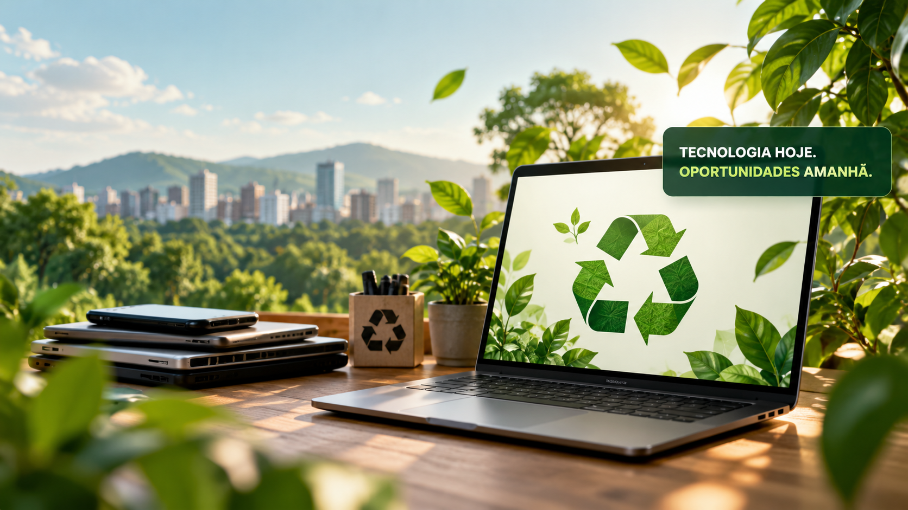
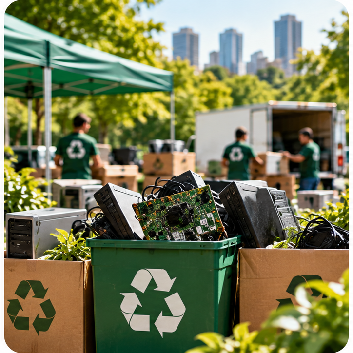
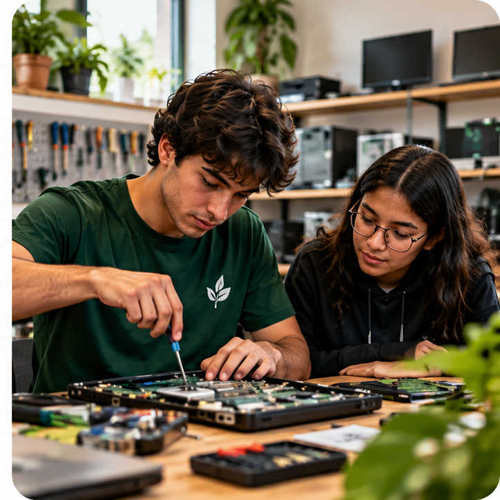

Missão
Reduzir o lixo eletrônico por meio do reaproveitamento, reciclagem e inclusão digital.
Na Reboot Verde, unimos tecnologia e sustentabilidade para reduzir o lixo eletrônico e ampliar o acesso à educação digital em comunidades que mais precisam.

Somos uma organização não governamental dedicada à redução do lixo eletrônico e à inclusão digital.
Acreditamos que a tecnologia pode ser uma grande aliada na construção de um futuro mais justo e sustentável.
Conheça nossas iniciativas →Reduzir o lixo eletrônico por meio do reaproveitamento, reciclagem e inclusão digital.
Ser referência em tecnologia circular e transformação socioambiental.
Sustentabilidade, inovação, transparência, inclusão e responsabilidade.
Conheça as iniciativas que transformam tecnologia em oportunidades e ajudam a preservar o meio ambiente.
Recuperamos computadores e notebooks para destiná-los a estudantes, instituições sociais e comunidades que precisam de acesso à tecnologia.
Como participar →
Organizamos campanhas de arrecadação de resíduos eletrônicos e incentivamos sua destinação ambientalmente adequada, evitando o descarte irregular.
Como participar →
Promovemos oficinas educativas de manutenção de computadores, reaproveitamento de equipamentos e conscientização ambiental.
Como participar →Cada equipamento recuperado representa uma oportunidade para as pessoas e um futuro melhor para o planeta.
Equipamentos coletados
Equipamentos recuperados
Resíduos destinados corretamente
Instituições beneficiadas
* Indicadores fictícios utilizados exclusivamente para demonstração acadêmica.
Conheça de perto as iniciativas que unem tecnologia, sustentabilidade e inclusão digital.
Existem várias maneiras de transformar tecnologia em oportunidades. Escolha como você deseja fazer a diferença.
Seu computador, notebook ou outro equipamento pode ganhar uma nova vida e ajudar quem mais precisa.
Quero doar →Compartilhe seus conhecimentos, participe de oficinas e ajude a promover a inclusão digital.
Quero participar →Empresas e instituições podem apoiar nossos projetos e ampliar o impacto social e ambiental da iniciativa.
Quero ser parceiro →Juntos, podemos transformar resíduos eletrônicos em oportunidades.
Tem alguma dúvida, sugestão ou deseja participar dos nossos projetos? Envie sua mensagem!
Acreditamos que grandes transformações começam com pequenas iniciativas. Queremos conhecer suas ideias!
Utilize nosso formulário ao lado.
Ajude a reduzir o lixo eletrônico e promover a inclusão digital.
Seja voluntário ou parceiro dos nossos projetos.
Explore as redes sociais e conheça mais sobre sustentabilidade, tecnologia e inclusão digital.
Links demonstrativos para as plataformas. A Reboot Verde não possui perfis oficiais.